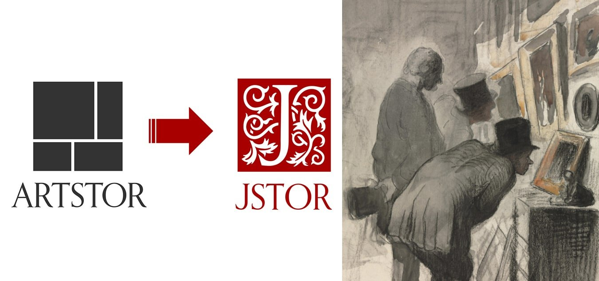
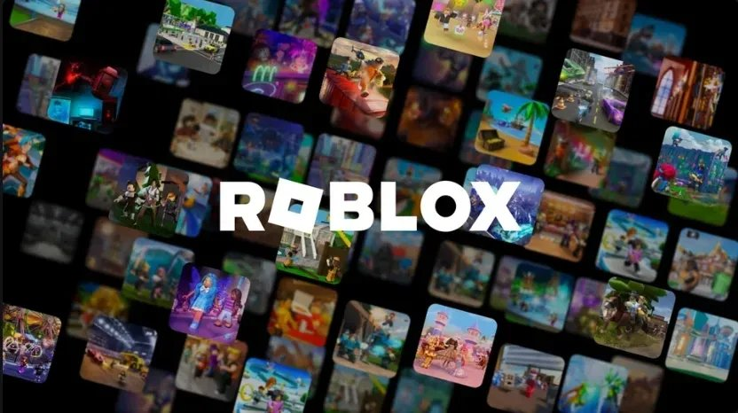
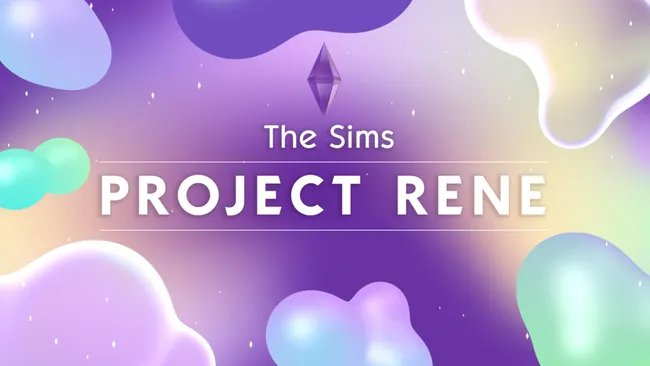

The story of how I built a strategic and evaluative framework that guided ITHAKA to integrate two content platforms into a single, unified experience.

My work also helped EA and Maxis understand the unique needs and wants of emerging players that grew up with Roblox, and what that meant for The Sims.

Combining consumer insights reports, exploratory research, and interviews, I helped Maxis let go of old assumptions and embrace the challenge of appealing to new-to-franchise players.